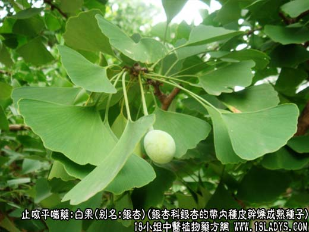
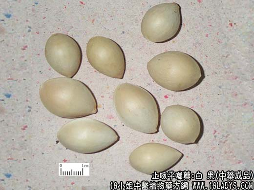
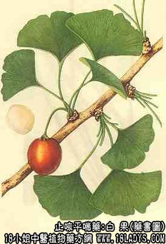

白果为较常用中药，始载《日华本草》，原名银杏。
别名：银杏。
来源：为银杏科植物落叶乔木银杏的带内种皮干燥成熟种子。多为栽培。
产地：主产于广西、四川、山东、河南、湖北、辽宁等地。
性状鉴别：种子呈椭圆形或倒卵圆形，两端稍尖。长约1.5~2.5厘米，中部直径1~1.5厘米。外壳乳白色或污黄色，木质，坚硬平滑，边缘有隆起的棱脊。内含种仁一枚，种仁扁椭圆形，淡黄色，一端包有棕色膜衣，另一端包有银灰色和深棕色交错的膜衣，干燥后往往脱落。质坚硬。断面粉质。气微，味淡微苦。
以颗粒大而均匀，乳白色，内种仁淡黄色，不霉者坏者为佳。
主要成分：白果肉含银杏醇、银杏酸、氢化白果亚酸、钾盐和糖，灰分含钙、磷、锰、铁。
功效与作用：温肺益气、镇咳止喘、抗利尿。又体外试验对结核杆菌有抑制作用。动物试验能抑制豚鼠结核病，有效成分为氢化白果酸。
炮制：生用捣碎。
性味：甘、苦、涩、平。
归经：入肺经。
功能：敛肺气，定咳喘，涩精止带。
主治：久咳气喘，遗精带浊，小便频数等症。
临床应用：主要用于肺虚咳喘，治慢性喘息性气管炎尤为适用，常配麻黄、杏仁、桑白皮、紫菀等，方如定喘汤。又治湿热带下，配莲子肉、乌贼骨，或配芡实等，方如易黄汤。
使用注意：1、白果有小毒，不可过服，也不可长服，尤其小儿，多服易致中毒，如出现惊厥、发热、不安、呕吐等症状时，宜洗胃，给予镇静剂。
2、生白果降痰消毒较好，熟白果定喘和敛小便较好。
用量：6~15g，生白果用量宜少些（因易致腹胀气闷），熟白果用量可稍大些。
处方举例：1、定喘汤（《摄生众妙方》）：白果肉12g（去壳打碎炒黄），麻黄3g，款冬花9g，姜半夏3g，桑白皮9g，苏子9g，黄芩6g，杏仁6g，甘草4.5g，水煎，分二次服用。
附：银杏叶，为银杏树的干燥叶，有效成分为属于黄酮甙元的银杏亭、槲皮素、茨菲醇、异鼠李亭。药理作用为：1、降低血清胆固醇，有一定作用，有效成分为银杏亭。2、扩张冠状动脉。
近年来，银杏叶用于治疗冠心病，对缓解心绞痛和改善心电图有一定效果。其所含的槲皮素、茨菲醇、异鼠李亭等三种黄酮甙元（称银杏甙元），对改善心绞痛也有一定的作用。用量：银杏叶每日4.5~9g，单用或配川芎、红花，方如银川红片（银杏叶9g、川芎、红花各15，为一日量，制成糖衣片，分三次口服）。